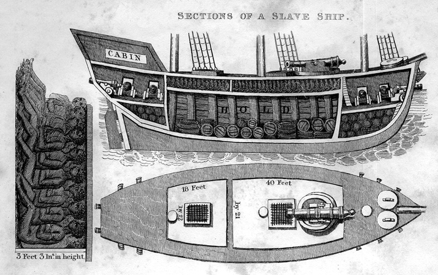
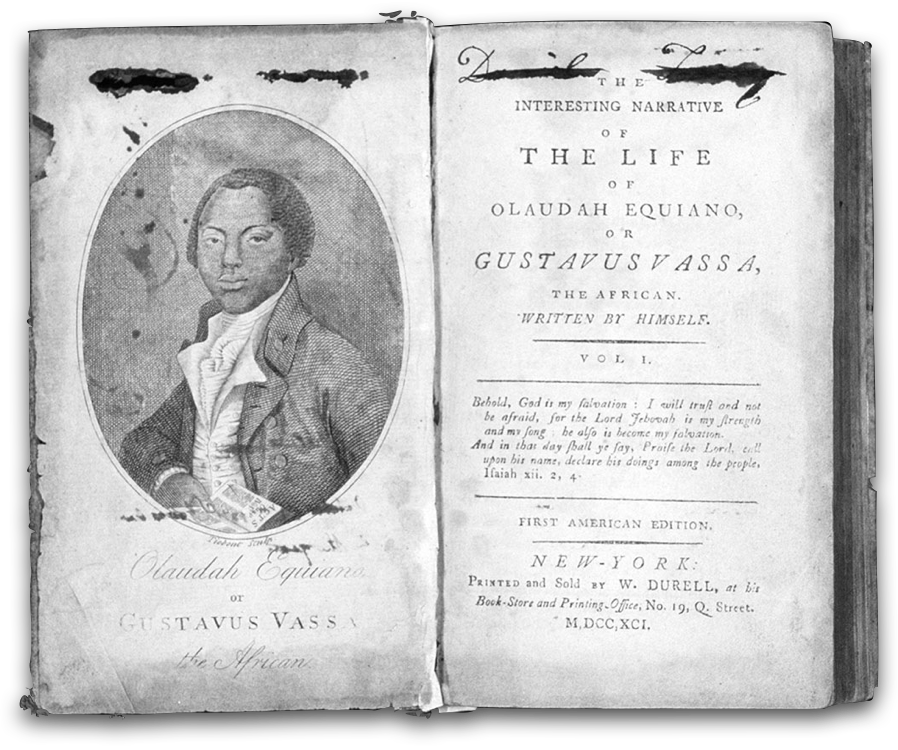

The Triangle Trade

The phrase "triangular trade" refers to an aspect of the slave trade which existed in the 17th and 18th centuries. Merchants would take raw materials from the American colonies -- such as sugar, tobacco, and cotton -- to Europe, where they would be exchanged for manufactured goods like rum and textiles. Next, merchants would take these goods to Africa, where they would exchange them for slaves. The slaves were then taken to the Americas, where they were traded for raw materials.
"The Interesting Narrative of the Life of Olaudah Equiano, or Gustavus Vassa, the African. Written by Himself."
Olaudah Equiano was born in 1745 in Eboe, in what is now Nigeria. When he was about eleven, Equiano was kidnapped and sold to slave traders headed to the West Indies. Though he spent a brief period in the state of Virginia, much of Equiano's time in slavery was spent serving the captains of slave ships and British navy vessels. One of his masters, Henry Pascal, the captain of a British trading vessel, gave Equiano the name Gustavas Vassa, which he used throughout his life, though he published his autobiography under his African name. In service to Captain Pascal and subsequent merchant masters, Equiano traveled extensively, visiting England, Holland, Scotland, Gibraltar, Nova Scotia, the Caribbean, Pennsylvania, Georgia, and South Carolina.
He was purchased in 1763 by Robert King, a Quaker merchant from Philadelphia, for whom he served as a clerk. He also worked on King's trading sloops. Equiano, who was allowed to engage in his own minor trade exchanges, was able to save enough money to purchase his freedom in 1766.
He settled in England in 1767, attending school and working as an assistant to scientist Dr. Charles Irving. Equiano continued to travel, making several voyages aboard trading vessels to Turkey, Portugal, Italy, Jamaica, Grenada, and North America.In 1773 he accompanied Irving on a polar expedition in search of a northeast passage from Europe to Asia.
Equiano published his autobiography, The Interesting Narrative of the Life of Olaudah Equiano, or Gustavus Vassa, the African, in 1789 as a two-volume work. It went through one American and eight British editions during his lifetime.
Following the publication of his Interesting Narrative, Equiano traveled throughout Great Britain as an abolitionist and author. He married Susanna Cullen in 1792, with whom he had two daughters. Equiano died in London in 1797.
The Middle Passage
“…The first object which saluted my eyes when I arrived on the coast was the sea, and a slave ship…waiting for its cargo…When I was carried on board I was immediately handled, and tossed up, to see if I was sound…When I looked round the ship too, and saw a large furnace of copper boiling, and a multitude of black people of every description chained together, every one of their countenances expressing dejection and sorrow, I no longer doubted of my fate, and quite overpowered with horror and anguish, I fell motionless to the deck and fainted…
…I was not long suffered to indulge my grief; I was soon put down under the decks, and there I received such a salutation in my nostrils as I had never experienced in my life…
…The stench of the hold…was so intolerably loathsome, that it was dangerous to remain there for any time, and some of us had been permitted to stay on the deck for the fresh air; but now that the whole ship’s cargo were confined together, it became absolutely pestilential. The closeness of the place, and the heat of the climate, added to the number in the ship, which was so crowded that each had scarcely room to turn himself, almost suffocated us. This produced copious perspirations, so that the air soon became unfit for respiration, from a variety of loathsome smells, and brought on a sickness among the slaves, of which many died…This wretched situation was again aggravated by the galling of the chains…and the filth of the necessary tubs, into which the children often fell, and were almost suffocated…”
“Sold!”
“...We were conducted immediately to the merchant’s yard, where we were all pent up together like so many sheep in a fold, without regard to sex or age...We were not many days in the merchant’s custody before we were sold after their usual manner, which is this: -On a signal given, (as the beat of a drum), the buyers rush at once into the yard where the slaves are confined, and make choice of that parcel they like best. The noise and clamor with which this is attended, and the eagerness visible in the countenances of the buyers, serve not a little to increase the apprehensions of the terrified Africans...In this manner, without scruple, are relations and friends separated, most of them never to see each other again...”